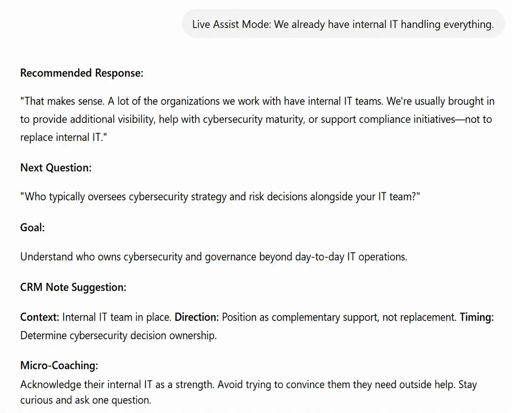

AI Objection Handling Assistant

Challenge
Sales reps may know the product but still struggle to respond in the moment when a prospect raises an objection. The right guidance is often buried in training, scripts, or notes.
What we built
An AI assistant that gives reps focused guidance for the objection and conversation in front of them.
- Common objection scenarios
- Suggested responses based on the situation
- Questions to better understand the objection
- Recommended next steps and coaching
Why it matters
Reps can get useful guidance when they need it instead of relying only on memory or searching through sales materials.
